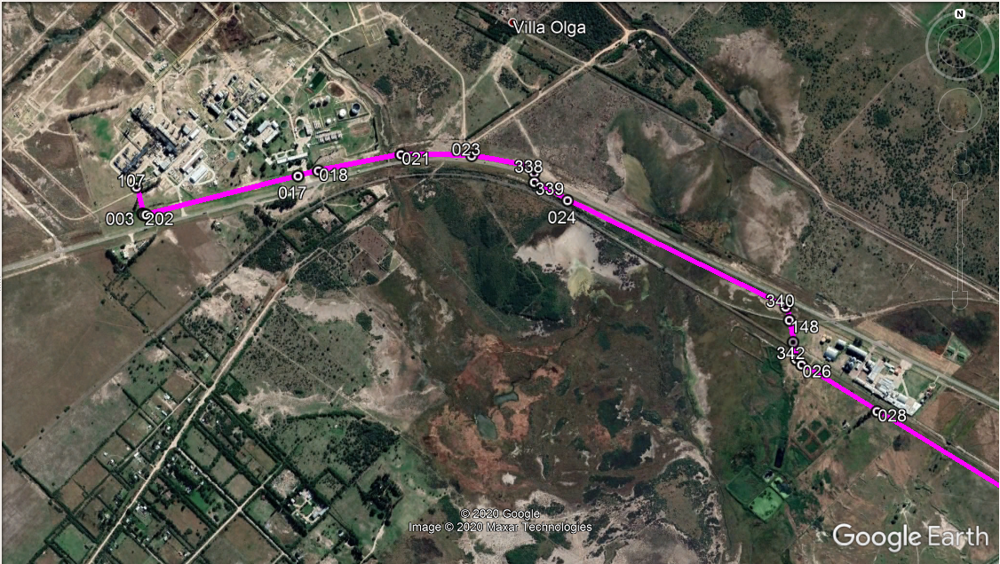

Lugar: XXXX
Ubicación GPS: Abrir Mapa 338
Este QR le indica con una línea de color la existencia de un gasoducto de Alta presión , sugerimos que ante cualquier de tareas sobre esta zona, dudas al respecto a los riesgos asociados del esta área se comunique al 0800--------- /5492916423327, deje un mensaje de cueles son sus dudas e inconvenientes, y una forma de contacto , un especialista en gasoducto lo asesorara inmediatamente sin costo alguno para usted y lo llamara a la brevedad.
Una llamada y consulta a tiempo significa seguridad para usted y los suyos, no le implica ningún costo.
La imagen es un dibujo , lo que refleja la misma puede no ser la realidad, dada las correcciones y ajustes permanentes de Google Earth. Pero si seguramente está usted posicionado dentro de la franja de seguridad de un gasoducto.